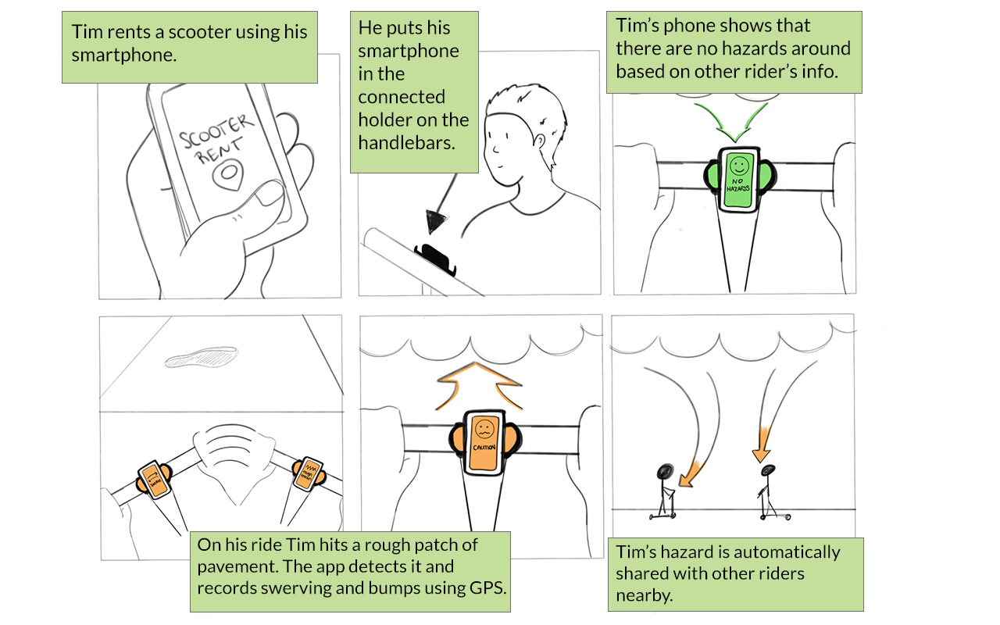
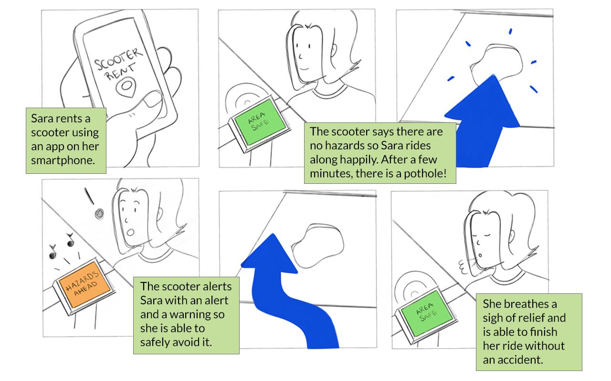
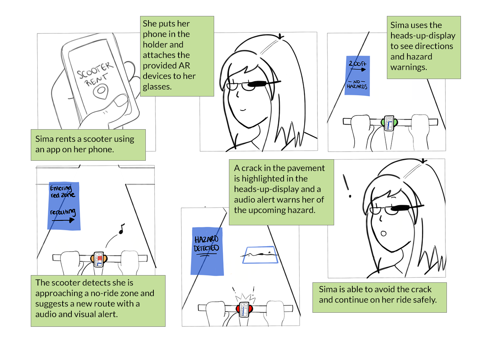

Milestone 2
Formative Study and Refined Concept
Introduction
In Milestone 1, we brainstormed ideas to improve the safety of electronic scooters. Riders of e-scooters cited “surface conditions” such as potholes or pavement irregularities as a main cause of accidents (Source: Car and Driver), so our solutions are meant to increase awareness of the riders’ surrounding environment. We defined our target audience as college students and other adults using scooters as a mode of transportation to work, class, or other tourist activities.
We brainstormed three concepts in Milestone 1: a screen-based alert system, a haptic alert system, and a heads up display (HUD) wearable alert system. For Milestone 2, we brought our early concepts to users for feedback and collected additional data about our target population. Through our research, we were able to converge on one broad concept and have new ideas for how to improve safety beyond an alert system.
Study Design
Describe the plan for your formative study and the rationale behind your plan. Give the details of how it was executed (number of participants, amount and types of data collected, times and locations observed, etc.).
Research Questions
We planned our study to answer the following questions and gain a better understanding of our target users:
- Who rides scooters in our target area?
- Where do people prefer to ride scooters?
- When do people choose scooters over other transportation methods?
- What hazards do they encounter on scooter rides?
- What do our target users think of our early concept ideas?
Methods
- Web Survey
- Diary Study
- Interviews
Web Survey
We used Qualtrics to survey students at UMich as well as our personal contacts. After writing the survey we pre-tested it with group members, then emailed it via UMich listservs. Survey topics included rider demographics, scooter habits such as where they prefer to ride, and why they chose a scooter over other methods. The last survey question recruited for our other two methods: the diary study and interview.
We had 70 total responses. 20% of respondents were excluded due to never having ridden a scooter. 56 people (80%) completed the full survey. Six respondents volunteered for further research. Of these six, three indicated they rode scooters daily while the other three were infrequent riders. We chose to interview the infrequent riders and asked the daily riders to join our diary study.
Diary Study
We also used Qualtrics to conduct our diary study. We asked our three diary study participants to complete a web survey form after each scooter ride over a 4-day period. Since renting scooters costs money we offered each participant a $10 Amazon gift card at the end of the four days. We also sent diary study participants daily reminders via email.
The diary study survey covered three topics: Hazards/memorable events encountered, the rider’s emotions at the end of the ride, and where/when the ride took place. We asked each participant to indicate which hazards (or other memorable event) they encountered on their ride. If one was encountered we then asked them to describe it in detail. To gauge their emotions at the end of the ride we showed emoticons indicating a range from angry to happy and asked them which one best reflected how they felt. Finally, we asked them to take a screenshot of the ride details page in their scooter-renting app (if applicable) and upload this. That page showed their starting/ending points, journey time and cost.
Interviews
While we collected diary study responses we gathered qualitative data via three user interviews with infrequent riders. Each interview took approximately 30 minutes. These interviews were conducted in-person and covered the following topics: details about recent rides, potential hazards, and feedback about potential design concepts. We asked participants to describe their most recent ride including where they were going, how long it took, and what problems (if any) they encountered. We used their survey responses to probe them about potential hazards that concerned them. We then showed them our current design concepts and asked what they liked and didn’t like about each one. Finally, we asked what safety-related features they would be willing to pay for.
Study Results
Analysis
We analyzed our data with an affinity map. First we recorded all survey, diary study and interview observations onto digital sticky notes using an online tool (Miro). We then grouped these observations according to themes and drew insights from them.
Findings
Who rides scooters in our target area?
According to our survey, our users skew very young. 100% of our respondents were between 18 and 39. 17% of respondents worked and 83% were students. This distribution was affected by the listservs we had access to, but it also matched our observations of riders from the first milestone. Gender was split almost equally between male and female. 63% of respondents were infrequent riders, using scooters less than monthly. 95% did not own their own scooter.
Where do people prefer to ride scooters?
55% of survey respondents rode in the street at least part of the time. (The other 45% only rode on the sidewalk.) This percentage might have been higher if there were more dedicated bike/scooter lanes. “I wish there was a bike lane I could have ridden in,” one interviewee said. 32% of survey respondents were very concerned about being hit by a car. While we received screenshots of our users’ journeys from the diary study, it didn’t show the route they took - only the starting and ending points. So unfortunately it wasn’t clear if they rode on streets or sidewalks. We did see that they rode exclusively on campus, however.
When do people choose scooters over other transportation methods?
From our interviews we learned that people choose scooters over other methods because of their availability and speed. “Waiting for an Uber takes too long,” one participant said. As we observed in Milestone 1, weather is also a factor. Only 15% of survey respondents were concerned about weather, likely because they don’t ride scooters in inclement weather in the first place.
What hazards do they encounter on scooter rides?
Pavement conditions were by far our users’ highest concern. Interviewees noted that scooters “aren’t very shock absorbent,” and that the roads were bad in some areas. This caused them to worry they would tip over. One interviewee said his scooter got stuck in a hole once. Because our users ride so often on the sidewalk they were also concerned about hitting people or objects. One diary study entry said, “A bike came right toward me and because it was crowded I couldn’t move over. I was worried I would hit someone.” Another diary study entry noted it was difficult to balance when the scooter moved slowly in crowds.
What do our target users think of our early concept ideas?
Our participants had some concerns about every idea, but liked the general concept of improving scooter safety. Although they are cost-conscious, interviewees indicated they would pay more for safety improvements. 16% of our survey respondents had been in a scooter accident, yet none of the respondents wore a helmet on their most recent ride, even though some had helmets with them at the time of the ride. This validates our focus on scooter safety.
Concept Insights
- Even though accidents are fairly common, our users indicated they didn't want to buy or carry extra safety-related items with them. They also don’t want to share wearables with strangers.
- Participants thought helping them navigate would be useful. One interviewee said on a recent ride he kept having to stop and look at his phone’s map because there was no easy way to view it while riding. Another said he wished there was a phone holder in the handlebars. Even when a user knows their route it may be necessary to look at a map because there are “red zones” in Ann Arbor that aren’t clearly marked. In a red zone the scooter slows to a crawl with no warning or explanation. As previously noted, it’s difficult to balance when the scooters move slowly.
- Interviewees also mentioned it’s difficult to tell if a scooter has low batteries. One said it was embarrassing to use a scooter that dies quickly.
- Users thought haptic feedback about potential hazards would be good unless it only warned them of hazards they could already see (e.g. crowds). One also thought the meaning of the feedback may not be intuitive for new riders.
- Two people also mentioned wanting to adjust the scooter. One wanted the handlebars to adjust because they were uncomfortably tall for her. Another wanted to make the base larger to accommodate a second rider.
Recommendations
- Focus on improving rented scooters, since there are so few scooter owners.
- Consider improvements that are integrated into the scooter but don’t require sharing wearables.
- Next round of ideation should address problems with pavement conditions, and other ways to encourage road riding in the absence of dedicated scooter/bike lanes.
Ideation and Selection
The main designs we asked our interviewees for feedback on include a built-in screen on the handlebars to help with navigation and warn about approaching hazards, aided by cameras and sensors on the scooter; a handlebar clip to let the rider mount their smartphone for navigation; a haptic feedback system built into the scooter to alert the rider of approaching hazards through vibrations (to ideally eliminate the need for them to look down at their phone); and a heads-up display implemented through augmented reality glasses, that would similarly provide navigation and hazard warnings.
In order to determine which designs we should look into further, we examined each of them based on interviewee responses, existence of similar products in the market, technological feasibility of implementing the design, likely financial cost (both to individual customers who own or rent scooters and to scooter rental companies), and project scope.
By far, the design that had the most support from our interviewees was the smartphone handlebar clip. It was one of our earliest design ideas, and as it was easily our simplest (and one that already has very similar products on the market), we wanted to come up with something more unique, so we started thinking of ways to refine our other design ideas taking the feedback and criticism from our interviews into consideration. Given that the main riders concerns raised by our studies were pavement conditions and navigation, and that none of our interviewees were very enthusiastic about the idea of having to purchase or carry around separate accessories for scooters, we limited our discussion to designs that could be integrated into the scooters themselves. Like in our initial round of brainstorming, we also continued to keep in mind how useable the design would be while the user is riding, aiming to keep it as hands-free and minimally distracting as possible.
Refined Scope and Concepts
Our project scope has stayed roughly the same since the early stages, once we decided to design for electric scooters rather than bicycles. The first design we proposed was to integrate the scooter with an application, inspired by the Waze navigation app, that would crowdsource ride data such as speed and vibrations collected through smartphone sensors and use the aggregated data to determine areas that may have uneven pavement conditions or other hazards and warn the rider about them.
Our second design is a similar concept, but rather than using crowdsourced data, would involve the scooters being fitted with sensors to ‘see’ approaching rough terrain and warn the rider through a built-in screen, using colors and simple symbols that could be interpreted with minimal diversion of attention from the road on the part of the rider.
Our third design is an evolution of the augmented reality glasses we had initially proposed, that interviewees had felt would be too expensive and cumbersome if individually owned and too unsanitary if treated as part of the scooter and shared among all riders. After we looked into the technology a bit more, we realized that we could simply use a wireless attachment that the user could mount on their glasses or sunglasses that would project information onto the lenses. It would use data either collected from built-in sensors on the scooter or crowdsourced through smartphone sensors, like our other designs, and display directions and warnings to the rider without requiring them to take their eyes off the road at all.
Conclusion
At the end of Milestone 2, we were able to narrow down the scope of our project to improve the safety of e-scooters through the addition of screen-based UI and sensors. Although we liked the idea of a HUD, our population surprisingly liked the simplicity of incorporating something they already have with them (a phone) instead of needing to rent or share new parts. Our research also gave us new ideas for safety improvement which do not include technology but rather physical product changes. Moving forward, we will consider these changes but still stay within the scope of the assignment.